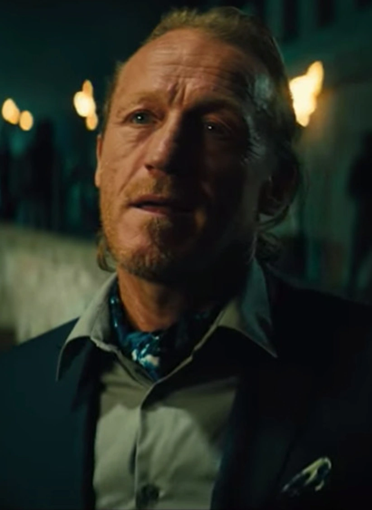
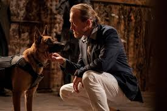
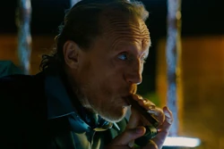

Berrada
"You see that coin? The first coin ever minted in this facility. Next to it, the first Marker. Not easy to track down, believe me. Now this coin, of course, it does not represent monetary value. It represents the commerce of relationships. A social contract in which you agree to partake. Order and rules."
“저 동전 보이시죠? 이 시설에서 처음 주조된 동전입니다. 그 옆에 있는 건 최초의 마커고요. 찾아내는 게 쉽지 않았어요, 정말로. 이 동전은 물론 금전적 가치를 뜻하는 게 아닙니다. 이건 관계의 거래, 즉 사회적 계약을 상징하죠. 당신이 그 안에 참여하겠다고 동의한 규율과 질서 말입니다.

Berrada
성별: 남자
국적: 모로코
소속: 콘티넨탈 호텔
직업: 호텔 주인, 범죄 군주
관계: 줄리어스(동료 매니저), 소피아 알 아즈와르(동료 매니저)
상태: 살아있음
